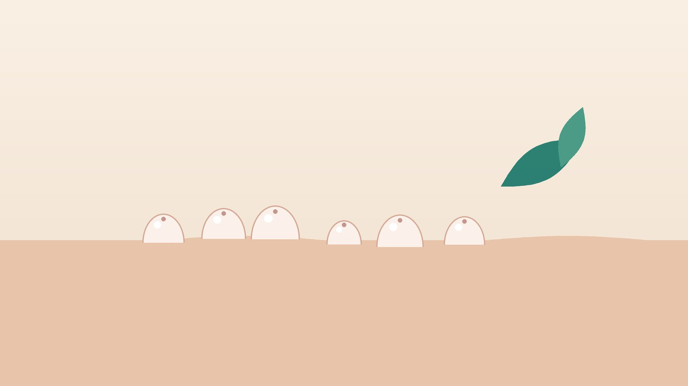

건강 칼럼 · 인천 물사마귀 한의원
아이 피부에 좁쌀 같은 돌기가 번진다면, 물사마귀(전염성 연속종) 관리법

우리 아이 피부, 이런 모습인가요?
- 2~5mm 정도의 매끈하고 둥근 돌기가 있다
- 돌기 가운데가 배꼽처럼 살짝 오목하다
- 겨드랑이, 옆구리, 팔 안쪽, 무릎 뒤에 모여 있다
- 긁은 자리를 따라 줄지어 생겼다
- 주변 피부가 붉고 가렵다
- 아토피피부염이 있거나 피부가 건조한 편이다
이 체크리스트는 진단 도구가 아니라 상담이 필요한지 가늠해 보는 참고용입니다.
물사마귀는 어떻게 생기고 옮나요?
미국 질병통제예방센터(CDC)는 전염성 연속종을 폭스바이러스 계열의 바이러스가 피부 바깥층에 감염되어 생기는 흔한 질환으로 설명합니다. 피부끼리 직접 닿거나 수건, 목욕 스펀지, 장난감, 수영장 킥판 같은 물건을 함께 쓸 때 옮으며, 아이가 돌기를 긁거나 만진 손으로 다른 부위를 만지면 몸의 다른 곳으로도 번집니다.
건강한 아이에게는 대개 6~12개월 안에 저절로 사라지지만, 길게는 몇 년까지 이어지기도 합니다. 피부 장벽이 약한 아토피피부염 아이들은 긁으면서 더 넓게 번지기 쉽고, 돌기 주변에 습진처럼 붉고 가려운 반응이 생기기도 합니다. 돌기가 붉게 부풀어 오르는 것은 몸이 바이러스를 없애는 과정에서 나타나는 반응일 수도 있습니다.
피부과 진료가 먼저 필요한 경우
- 돌기가 짧은 기간에 수십 개로 늘어난다
- 돌기가 붓고 고름이 차거나 열이 난다 (세균 감염)
- 눈꺼풀 가장자리에 생겨 눈이 충혈된다
- 어른의 생식기 주변에 생겼다
- 면역이 떨어지는 질환이나 치료 중인데 크고 많은 돌기가 생겼다
피부과에서는 큐렛으로 긁어내는 방법, 냉동 치료, 바르는 약 등으로 제거할 수 있습니다. 개수가 적을 때 치료하면 아이가 겪는 불편도 적습니다.
한의학은 물사마귀를 어떻게 보나요?
한의학 고전에는 쥐의 젖꼭지처럼 작고 둥글게 솟는 피부 돌기를 서유(鼠乳)라 불렀는데, 가운데가 오목한 진주빛 돌기라는 묘사가 물사마귀와 잘 맞습니다. 바깥의 나쁜 기운인 풍열(風熱)이 피부에 머물고, 몸 안의 습기와 열이 함께 피부로 올라와 돌기가 생긴다고 보았습니다.
한의학이 특히 주목한 것은 같은 바이러스에 노출되어도 어떤 아이는 금방 낫고 어떤 아이는 오래 번진다는 점입니다. 피부를 지키는 기운을 위기(衛氣)라 하고, 이 기운이 약하거나 피부가 건조하고 예민하면 돌기가 쉽게 번진다고 해석했습니다. 그래서 한방 관리는 돌기 하나하나를 없애기보다 피부 장벽과 아이의 컨디션을 회복시키는 데 초점을 둡니다. 예부터 사마귀류에 써 온 의이인(薏苡仁, 율무)도 이런 관점에서 처방에 활용합니다.
우리 아이는 어떤 경우일까?
같은 물사마귀라도 아이의 체질에 따라 한약 처방의 방향이 달라집니다.
1. 풍열(風熱) 빨갛고 가려운 유형
- 이런 분에게 많아요
- 돌기 주변이 붉고 가려운 아이
- 나타나는 모습
- 돌기가 붉게 부풀고 긁으면 줄지어 번진다
- 함께 오는 몸의 신호
- 가려움, 열감, 잦은 코감기
- 진찰에서 보이는 모습
- 혀끝이 붉음
- 치료 방향
- 피부의 열을 식히고 가려움을 줄이는 방향 (의이인을 더한 소풍산 계열)
- 오늘부터 해 볼 것
- 손톱을 짧게 깎고 잘 때 얇은 면장갑을 끼워 보세요.
2. 습열(濕熱) 번들거리고 오래가는 유형
- 이런 분에게 많아요
- 땀이 많고 단 음식을 즐기는 아이
- 나타나는 모습
- 겨드랑이·사타구니처럼 습한 곳에 몰려 오래간다
- 함께 오는 몸의 신호
- 땀띠, 끈적한 땀, 묽은 변
- 진찰에서 보이는 모습
- 설태가 누렇고 두꺼움
- 치료 방향
- 습과 열을 걷어 내는 방향 (의이인 위주의 처방)
- 오늘부터 해 볼 것
- 땀을 흘린 뒤에는 바로 씻기고 통풍이 잘되는 옷을 입히세요.
3. 폐비기허(肺脾氣虛) 면역이 약한 유형
- 이런 분에게 많아요
- 감기에 자주 걸리고 입이 짧은 아이
- 나타나는 모습
- 돌기가 크게 붉어지지 않고 조용히 오래 남는다
- 함께 오는 몸의 신호
- 피로, 식욕 부진, 잦은 감기
- 진찰에서 보이는 모습
- 혀가 담백하고 맥이 약함
- 치료 방향
- 피부를 지키는 기운과 소화 기능을 돕는 방향 (옥병풍산·삼출건비탕 계열)
- 오늘부터 해 볼 것
- 잠을 충분히 재우고 고른 식사를 챙기세요.
한의원에서는 어떻게 진찰하나요?
- 피부 진찰: 돌기의 개수, 위치, 주변 피부의 붉음과 긁은 자국을 확인합니다.
- 동반 질환: 아토피피부염, 비염, 잦은 감기 여부를 여쭙니다.
- 생활 문진: 수영장·목욕탕 이용, 형제 간 감염, 수면과 식사 습관을 봅니다.
- 피부과 치료 이력: 제거 치료를 받았는지, 바르는 약을 쓰는지 확인합니다.
한약 치료는 어떻게 하나요?
1. 한약이 중심인 이유
물사마귀는 주로 어린아이에게 생기고 몸 여러 곳에 흩어져 있어, 돌기 하나하나를 처치하는 것보다 몸 전체의 상태를 다스리는 방법이 아이에게 부담이 적습니다. 그래서 침이나 약침 같은 시술보다 아이가 집에서 꾸준히 복용할 수 있는 한약을 치료의 중심으로 삼습니다.
2. 처방은 어떻게 정하나요?
- 기본 약재: 예부터 사마귀류에 써 온 의이인(薏苡仁, 율무)을 중심으로, 습기를 걷고 피부의 열을 식히는 약재를 더합니다.
- 가려움이 심할 때: 피부의 열과 가려움을 줄이는 소풍산 계열을 바탕으로 합니다.
- 땀이 많고 오래갈 때: 습열을 걷어 내는 약재의 비중을 높입니다.
- 자주 아픈 아이: 피부를 지키는 기운과 소화를 돕는 옥병풍산·삼출건비탕 계열을 함께 고려합니다.
아이의 나이와 체중에 맞춰 용량을 정합니다. 탕약으로 처방하되 쓴맛이 덜한 약재 위주로 구성하며, 아이가 힘들어하면 집에서 단것을 조금 타서 먹여도 됩니다(돌 전 아기에게 꿀은 피하세요). 의이인이 사마귀류에 도움이 된다는 보고가 있지만 물사마귀를 반드시 없앤다고 말할 근거는 아직 충분하지 않아, 개수와 번짐의 변화를 사진으로 확인하며 처방을 조정합니다.
3. 복용 중 확인할 것
복용 중 설사, 복통, 식욕 저하가 생기면 바로 알려 주세요. 돌기가 붉게 부풀어 오르는 것은 몸이 바이러스에 반응하며 사라지는 과정일 수 있지만, 고름과 열이 나면 세균 감염일 수 있어 피부과 진료가 필요합니다. 돌기 부위에는 침이나 약침을 놓지 않으며, 가려움이 심한 아이에게만 필요할 때 피부에 붙이는 소아 스티커침을 보조로 씁니다.
원장님이 네이버 블로그에 진료 이야기와 건강 정보를 꾸준히 올리고 있습니다. 더 많은 이야기는 블로그에서 확인해 보세요.
블로그 보기치료는 어떤 순서로 진행되나요?
- 첫 진료 돌기의 개수와 번지는 속도, 아이의 체질을 보고 처방을 정합니다. 많이 퍼졌거나 감염이 의심되면 피부과 진료를 함께 권합니다.
- 2주 첫 처방을 복용하며 소화 상태와 가려움 변화를 확인합니다.
- 4~8주 2주 간격으로 같은 부위를 사진으로 찍어 개수와 붉음의 변화를 비교하며 처방을 조정합니다.
- 마무리 새로 생기는 돌기가 없고 기존 돌기가 줄어들면 복용을 마무리하고 생활 관리로 이어갑니다.
물사마귀는 저절로 낫는 과정에서 붉어지기도 하므로, 사진 기록으로 변화를 차분히 확인하는 것이 좋습니다.
집에서 지켜야 할 것
- 긁지 않기: 손톱을 짧게 하고, 돌기를 짜거나 뜯지 않습니다.
- 수건 따로: 수건, 목욕 스펀지, 옷은 가족과 따로 씁니다.
- 수영장: 돌기를 방수 밴드로 가리고, 킥판과 수건을 함께 쓰지 않습니다.
- 보습: 목욕 후 3분 안에 보습제를 발라 피부 장벽을 지킵니다.
- 형제 관리: 형제와 함께 목욕할 때는 돌기가 닿지 않도록 순서를 나눕니다.
다른 진료가 함께 필요한 경우
- 개수가 빠르게 늘거나 얼굴에 생기면 피부과 치료를 받으세요.
- 고름과 열이 나면 세균 감염 치료가 필요합니다.
- 아토피피부염이 심하면 습진 치료를 함께 해야 번짐이 줄어듭니다.
- 어른의 생식기 주변 돌기는 성매개 감염 검사도 필요할 수 있습니다.
자주 묻는 질문 Q&A
- Q1. 물사마귀는 저절로 낫나요?
- 대부분 6개월에서 1~2년 사이에 저절로 사라지지만, 번지는 동안 다른 아이에게 옮길 수 있어 관리가 필요합니다.
- Q2. 어린이집에 보내도 되나요?
- 보통 등원을 막지는 않지만, 돌기를 옷이나 밴드로 가리고 수건을 함께 쓰지 않게 해 주세요.
- Q3. 짜면 빨리 낫지 않나요?
- 집에서 짜면 감염과 흉터, 번짐의 위험이 있어 피부과에서 처치받으세요.
- Q4. 한약으로 물사마귀가 없어지나요?
- 한약으로 피부의 열과 습기, 면역 상태를 다스려 번짐을 줄이고 몸이 이겨 내도록 돕습니다. 다만 반드시 없어진다고 단정할 수는 없어 사진으로 경과를 확인하며 진행합니다.
- Q5. 일반 사마귀와 같은 건가요?
- 원인 바이러스가 달라 다른 질환입니다. 일반 사마귀는 표면이 거칠고 단단합니다.
- Q6. 어른도 걸리나요?
- 걸릴 수 있으며, 어른의 생식기 주변에 생기면 성접촉으로 옮은 경우가 있어 진료가 필요합니다.
- Q7. 아이가 한약을 잘 먹을 수 있을까요?
- 나이에 맞춰 양을 줄이고 쓴맛이 덜한 약재 위주로 구성합니다. 집에서 단것을 조금 타서 먹여도 되며, 처음 며칠은 소량부터 시작해도 괜찮습니다.
- Q8. 한약은 얼마나 먹어야 하나요?
- 보통 4~8주 동안 2주 간격으로 경과를 확인하며 처방을 조정합니다. 피부과 치료와 함께해도 됩니다.
진료 안내
- 진료시간
- 평일 09:00~20:00 (점심시간 13:00~14:00)
토·일·공휴일 09:00~15:00 - 주소
- 인천광역시 서구 가경주로 46, 2층 (가정동)
인천2호선 가정중앙시장역 인근
영상으로 길 안내 보기 → - 주차
- 한의원 건물 바로 앞 1층 도원주차장
진료시간은 사정에 따라 바뀔 수 있으니 방문 전 전화로 확인해 주세요.
참고 자료
※ 이 글은 일반적인 건강 정보이며, 개인의 상태에 따라 치료 방법과 결과는 다를 수 있습니다. 정확한 진단과 치료는 진료를 통해 결정됩니다. 침·약침 시술 후 드물게 멍, 통증 등이 생길 수 있습니다.